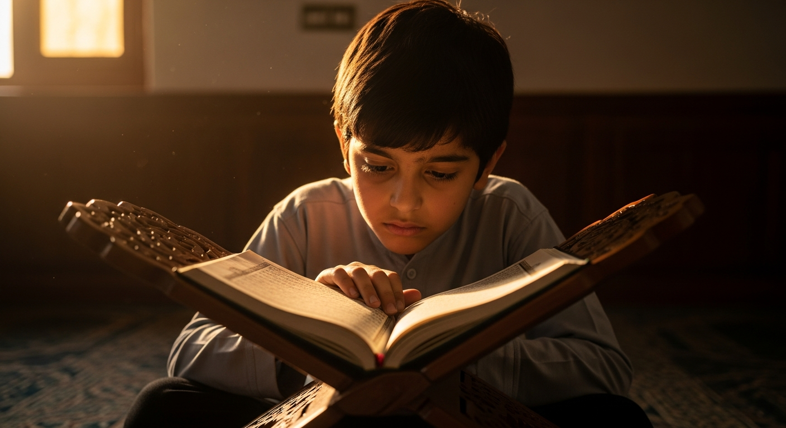

In the Name of Allah, the Most Gracious, the Most Merciful
Hafez Mohammad Ayan
Hafiz-ul-Quran
A lifelong journey of preserving the sacred text in mind and heart. Dedicated to sharing the light of the Quran through recitation, teaching, and living its timeless values.
Who I Am
About Me
Assalamu Alaikum. I am Ayan, a Hafiz-ul-Quran who has had the immense blessing of committing the entire Book of Allah to memory. This journey began in my early childhood and has shaped every aspect of my life — my values, my character, and my aspirations.
The path of Hifz is one of extraordinary discipline and devotion. Under the guidance of dedicated scholars, I spent years in rigorous daily practice — reciting, revising, and deepening my understanding of the Quran's meanings. Every verse I memorized felt like a gift directly from Allah.
Today, I am committed to sharing this knowledge through teaching, leading prayers, and participating in community service. I believe every Muslim deserves access to the Quran's wisdom, and I strive to make that connection accessible, meaningful, and spiritually enriching.
My Path
Quran Journey
The First Verses
My journey with the Quran began at home, where my family instilled a deep love for the Book of Allah. I memorized short surahs and learned proper Arabic pronunciation before starting formal Hifz education.
Enrollment in Hifz Program
I enrolled in a structured Hifz school under a qualified and dedicated Sheikh. The daily routine of memorization, revision, and Tajweed lessons became the foundation of my life. I memorized my first Juz in this period.
Completion of 15 Juz
Reaching the halfway point of the Quran was a profound moment. The discipline of daily revision became second nature. I also began assisting younger students with their memorization, developing an early passion for teaching.
Completion of the Entire Quran
By the grace of Allah, I completed the memorization of all 30 Juz of the Holy Quran. This was the most significant moment of my life — a day of tears, gratitude, and renewed commitment to serving the Quran and its community.
Advanced Islamic Education
After completing Hifz, I pursued advanced studies in Islamic jurisprudence, Tafseer (Quranic exegesis), and Arabic grammar. I continue to revise my memorization daily and teach students of all ages in the community.
Expertise
Knowledge & Skills
Proficient in melodious, precise recitation with proper makhraj and rhythm.
Deep mastery of all Tajweed rules including Makharij, Sifaat, and advanced Waqf principles.
Consistent daily revision system to maintain strong memorization of all 30 Juz.
Comprehensive knowledge of Fiqh, Hadith, Seerah, and Aqeedah.
Experienced in teaching Hifz, Tajweed, and Quran to students of all ages.
Leads Taraweeh prayers, delivers khutbahs, and speaks at Islamic events and conferences.
Sacred Words
Featured Quran Verses
ٱلْحَمْدُ لِلَّهِ رَبِّ ٱلْعَـٰلَمِينَ ٱلرَّحْمَـٰنِ ٱلرَّحِيمِ
"All praise is for Allah — Lord of all worlds, the Most Compassionate, Most Merciful."
Surah Al-Fatiha — 1:2-3لَا يُكَلِّفُ ٱللَّهُ نَفْسًا إِلَّا وُسْعَهَا
"Allah does not burden a soul beyond that it can bear."
Surah Al-Baqarah — 2:286فَإِنَّ مَعَ ٱلْعُسْرِ يُسْرًا إِنَّ مَعَ ٱلْعُسْرِ يُسْرًا
"Verily, with hardship comes ease. Verily, with hardship comes ease."
Surah Al-Inshirah — 94:5-6Milestones
Achievements
Quran Completion
Completed the memorization of all 30 Juz of the Holy Quran with Ijazah from a certified Sheikh.
Quran Competition
Placed among the top recitors in regional and national Quran recitation and Hifz competitions.
Tajweed Certification
Received formal certification in advanced Tajweed from an accredited Islamic institution.
Teaching Experience
Successfully guided over 50 students in Quran memorization, helping many complete multiple Juz.
Taraweeh Leadership
Led complete Taraweeh prayers for the community during multiple Ramadan seasons as Imam.
Community Service
Organized Quran study circles, Islamic events, and youth programs serving hundreds of community members.
Discipline
Daily Routine
Glimpses
Gallery

Purpose
Mission & Vision
Serving the Quran and Its Community
My mission is to preserve, teach, and spread the sacred words of the Quran — making this timeless knowledge accessible to every Muslim, regardless of age or background.
I am committed to being a bridge between the Quran and the community, ensuring that the light of this divine book reaches every household and every heart.
- Teach Hifz and Tajweed to students of all ages
- Lead prayers and represent Islam with excellence
- Support and mentor aspiring Huffaz in their journey
- Organize Islamic education programs for the community
A World Guided by Quranic Light
I envision a community deeply connected to the Quran — where its recitation fills homes, its teachings guide decisions, and its values shape character from childhood.
My long-term goal is to establish a comprehensive Islamic educational center that provides world-class Hifz, Tajweed, and Islamic studies programs to future generations.
- Establish a Hifz and Islamic studies institution
- Train a generation of qualified Quran teachers
- Develop accessible online Quran education resources
- Foster interfaith understanding through Quranic values
What People Say
Testimonials
Ayan's method of teaching Tajweed is unlike anything I had experienced before. He has an extraordinary ability to break down complex rules into simple, memorable lessons. My recitation improved immensely within just a few months under his guidance.
Our community is truly blessed to have Ayan lead our Taraweeh prayers. His recitation is not only technically perfect but spiritually moving. Every prayer felt like a journey through the words of Allah. He is a genuine scholar and a humble soul.
I have taught many students over the years, but Ayan stood out from the very beginning. His dedication, his love for the Quran, and his extraordinary memory are gifts from Allah. He is now passing this gift on to others, and I could not be more proud of his journey.
Get In Touch
Contact Me
Let's Connect
Whether you are interested in Quran lessons, seeking guidance on starting your Hifz journey, or would like to invite me to speak at your event — I would love to hear from you.